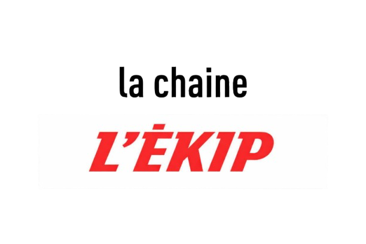

LE QUOTIDIEN DU SPORT
TOUS LES SPORTS, TOUS LES JOURS

Le journal de L'EKIP
ÉDITION NUMÉRIQUE
À LA UNE
FOOTBALL
JDL
RÉSULTATS
ENQUÊTES
RÉSEAUX DE LA LIGUE
L'EKIP · FOOTBALL
FOOTBALL
Retrouvez toutes les actualités du footabll.